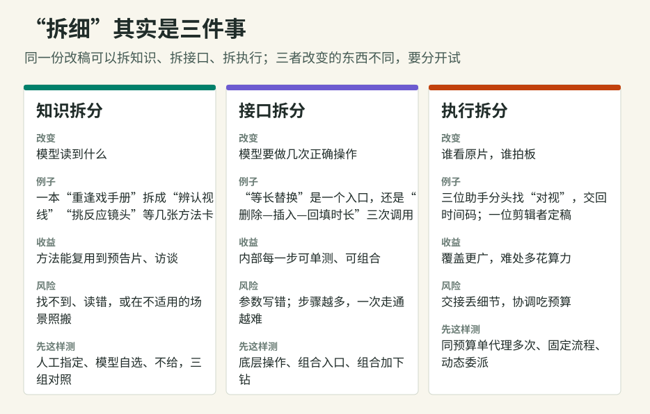
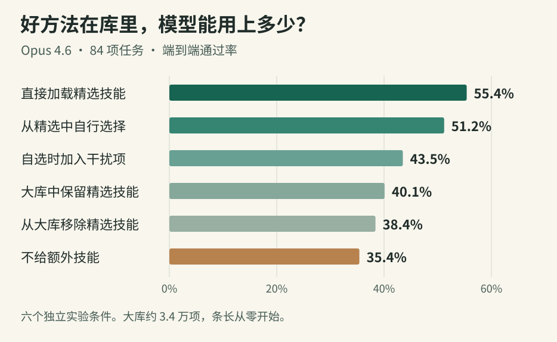
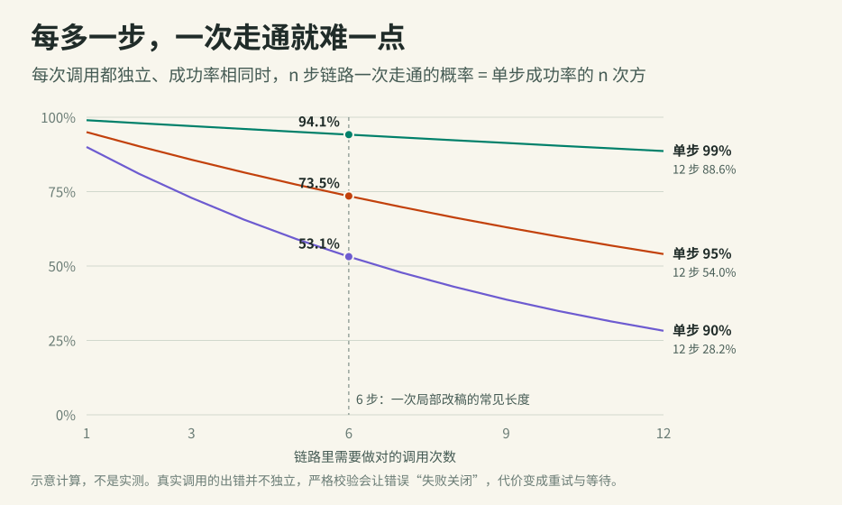
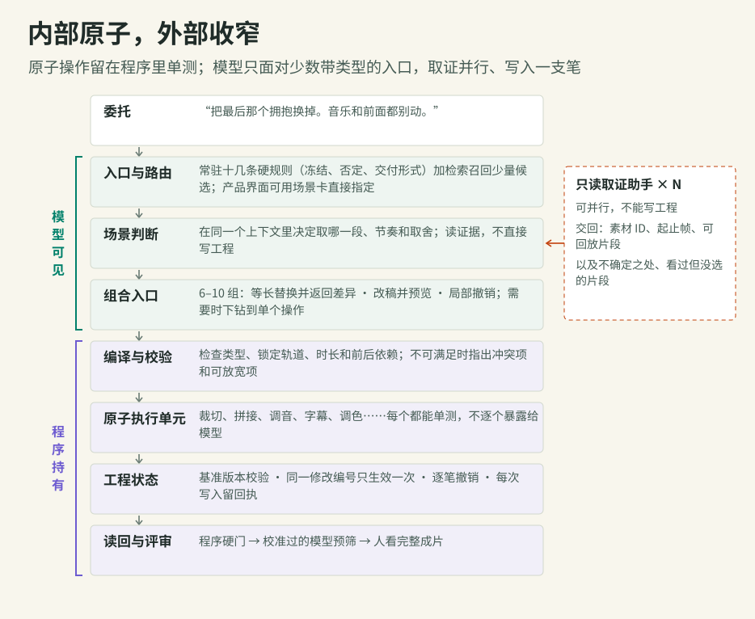
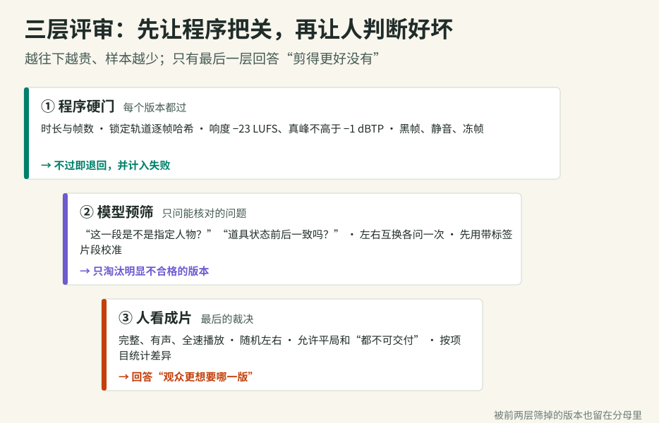
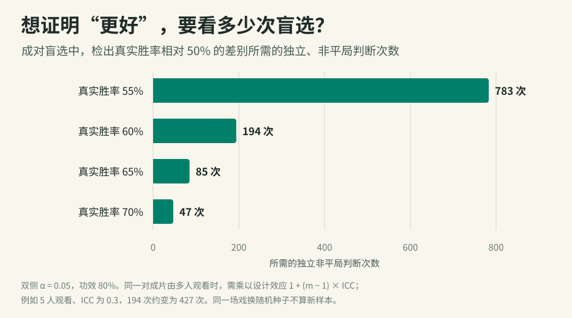
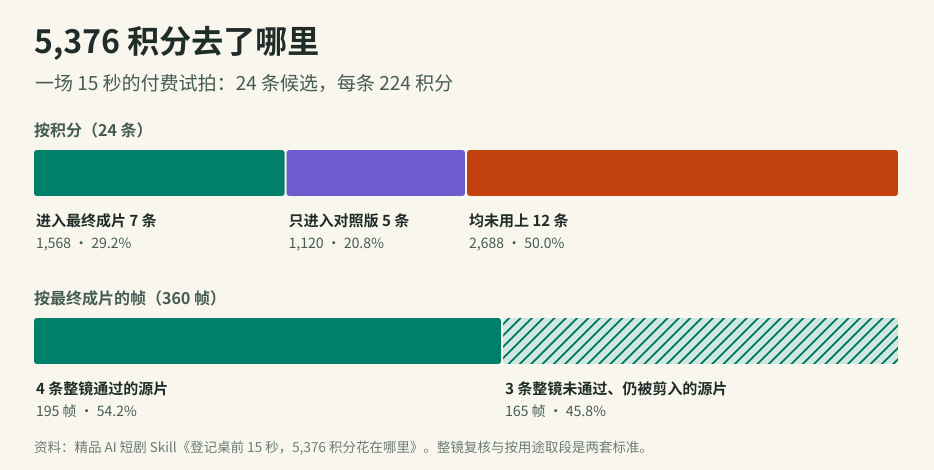

Agent 怎样分工，Skill 该拆多细？
剪辑师收到一句改稿意见：“把最后那个拥抱换掉。想让人觉得他们认出了对方，音乐和前面都别动。”逐帧替换很容易。难的是找到能传达“认出来”的那一眼，同时保证已经认可的部分原样保留。找镜头、判断表演、守住工程，是同一次交付里的三种能力。
如果让一个 Agent 独自完成，它得读懂委托、翻素材、比镜头、改时间线，还要自己检查。换成三个 Agent，就要决定谁看哪些原片、谁有权改工程、意见冲突时听谁的。再给它们一本剪辑手册，又多出一个问题：手册里写的“用反应镜头收尾”，放在这场戏里还适用吗？
这篇文章想回答的是一个产品团队天天在争的问题：Agent 应该怎样分工，Skill（技能）应该拆多细？ 我们读了近两年的技能评测、工具接口实验、多代理对照研究、视频剪辑基准和几十个开源剪辑项目，也拿自己维护的剪辑技能库和一次 AI 短剧付费试拍做了对照。先把结论放在前面：
- “拆细”其实是三件事。 拆知识，改变模型读到什么；拆接口，改变模型要做几次正确操作；拆执行，改变谁看原始证据、谁拍板。三者收益和风险都不同，一起改就说不清是哪一步起了作用。
- 原子留在内部，入口对模型收窄。 执行单元可以很细，便于单测和组合；交给模型挑选的入口要少，最好是带类型、能下钻的组合操作。
- 能独立取证的工作并行，必须一起权衡的决定集中，写进工程的只留一支笔。
- 先测量，再扩张。 “路由选得准不准”“长链能不能次次做对”“成片是不是更好”，是三个要分别回答的问题。多加一个 Skill、多派一个 Agent 之前，先知道钱花在哪一层。
怎样读文中的数字。 每个数字旁都有原始出处，并尽量写明版本、样本和分母。标 † 的数字来自 2026 年预印本的摘要或二手转述，还没对照原文表格逐项核验；证据附录写明了每条证据的口径，待核清单列出了仍要补查的地方。文中的剪辑流程是设计推演；涉及我们自己项目的数字，来自公开仓库里的记录。
一次改稿里，谁负责做决定？#
先统一几个说法。这里把 Agent 称为能根据目标、当前状态和工具反馈决定下一步的执行者。模型负责其中的判断；宿主程序把工具、工程状态、权限和反馈接到它身上。工作流则是事先写好的步骤，步骤内部仍然可以让模型发挥判断力。所谓“Agent 架构”，具体到一次运行，就是哪些决定交给模型、哪些写进程序、哪些要请人定。Anthropic 对工作流与 Agent 的区分
把开头那次改稿拆开看，五个阶段的决定者各不相同：
- 明确委托用户定目标，主 Agent 解释音乐和前段锁定。“认出来”是表达意图，允许多种剪法。
- 寻找证据主 Agent 分派，检索工具或助手取证分头找视线与反应，交回人物、时间码、前后动作和可回放的原声。
- 选择镜头能看到连续场景的主创判断把两个候选各自接到上一个镜头后，比较观众先注意到谁。
- 写入工程编辑工具按约束执行在指定草稿版本上等长替换，返回实际变更区间和轨道。
- 决定交付程序核对约束，看片者判断表达检查音乐和时长，再全速、有声看两个版本。证据不足就回到查找。
这张表最实用的读法，是问一个问题：如果选错了镜头，下一次应该给谁什么反馈？ 时长变了，问题在写入工具。候选里压根没有对视，问题在检索。候选里明明有更好的一眼，却挑了一个无关的特写，就该让选镜头的人重看上下文。笼统地给整个系统加一句“请更仔细”，很难对准这三种错误。
五个名词，各管一件事#
| 名词 | 管什么 | 剪辑里的例子 | 常见误会 |
|---|---|---|---|
| Skill（技能） | 保存一项工作的方法。按 Agent Skills 开放格式，它是以 SKILL.md 为入口的目录，可附脚本、样例和资料 | “先确定谁在看谁，再把目光接在反应之前”，附一个判断错位的反例 | 写进库里就等于模型会用 |
| 工具 | 提供能实际执行的动作 | 按时间码读原片、等长替换片段 | 工具返回“成功”就等于工程真的变了 |
| 子代理 | 领取子目标，在自己的上下文里取证或判断，再把结果交回 | 一位助手专门找“两人对视”的片段 | 多派几位就能看得更全 |
| 状态 | 回答“刚才到底发生了什么” | 第 7 版时间线、哪条音轨被锁、哪次写入成功 | 对话里一句“音乐已锁好”就是凭据 |
| 分发 | 把工具和技能交到宿主手里 | MCP 服务列出工具，也能通过 Skills 扩展提供技能文件 | 能读到方法，就能安全地改眼前的工程 |
出处：Agent Skills 规范 · 子代理的上下文与委派 · LangGraph 的状态保存 · MCP Skills 扩展
“把 Skill 拆细”到底在拆什么？#
做剪辑的人说“拆细”，可能是把“剪好一场重逢”拆成找人物、辨视线、挑反应、对声音。工程师说“拆细”，可能是把“替换一个镜头”拆成删除旧片、插入新片、回填时长。还有人想给每项工作配一位 Agent。这三种改动彼此独立。实验时一起改，最后连哪一步帮了忙都说不清。


知识拆分改变模型能读到什么。一本完整的重逢戏手册能讲清眼神、前后镜头和观众预期之间的关系；拆成几张方法卡后，做预告片的人也能复用“如何辨认视线”，代价是检索器必须知道什么时候该把两张卡一起交出去。
接口拆分改变模型要做多少次正确操作。引擎内部可以把锁轨校验、入出点计算和写入分别测试，对模型却只暴露一次“等长替换并返回差异”。
执行拆分改变谁能看到原始证据、谁有最后决定权。一个 Agent 可以顺序读五张卡，五位 Agent 也可以共读一本手册。
下面三节分别看这三把刀各自的证据。
知识拆分：写进库里，不等于用得上#
好方法有用，但不是每一份都有用#
两项大规模评测给出了看似矛盾的答案。SkillsBench v4 在 87 项任务、18 组模型与运行环境上比较有无精选技能，按任务平均的通过率从 33.9% 升到 50.5%，但仍有 13 项任务的观察值下降。SWE-Skills-Bench v2 测了 98 个公开的软件工程技能，共 3,920 对有无技能的运行，需求检查的平均通过比例只从 76.6% 到 76.9%；4 个技能显著正向、2 个显著负向、92 个未检出显著差异。SkillsBench v4 · SWE-Skills-Bench v2
两篇论文可以同时成立。前一项问的是精选的方法能否让整项任务过关，后一项问的是公开库里随手可得的方法能让需求多过几条检查。对象、基线和分母都变了。对产品团队来说，真正的启示是：一份方法是资产还是负担，要逐条做有无对照才知道。 后续研究也报告了不少反例：模型自己生成的技能中，约四分之一出现负迁移†；同一个 Skill 在不同配置下效应符号会翻转†；技能造成的失败里，选了完全无关技能的只占很小一部分，更多是“看起来相关”的技能被过度执行，或者覆盖了任务的明确要求†。负迁移统计 · 技能诱发失败的差分分析
剪辑领域的信号同样提醒我们别高估手册。Timeline-Bench 给 Agent 加了一份约 1,900 词的剪辑指导，没有看到可检出的提升，置信区间宽到不能排除中等效应†。Timeline-Bench 项目文档
从“直接给”到“自己找”，每一步都在漏#
写对了方法，模型还得在需要时找到它、读进去、用对地方。一项研究沿用 SkillsBench 的 84 项任务，给同一款 Opus 4.6 换了六种技能供应方式：


最值得追问的是 55.4% 和 51.2% 之间的差距。好方法还在同一个小目录里，仅仅把“直接给”改成“模型自己决定读什么”，就已经少了 4.2 个百分点。放进约 3.4 万项的大库后只剩 40.1%，和不给技能的 35.4% 相差无几。同一篇论文也发现，按当前任务对检索到的技能做针对性精修，能找回一部分损失；检索结果本身很差时，精修也救不回来。研究设计与六种加载条件
“渐进加载”解决了什么，没解决什么。 Agent Skills 的做法是先只给模型看每个技能的名称和一句描述，用到时再读正文。这节约了当前上下文，但“能不能找到那一页”要单独测。检索器可以索引全文，模型只需读命中的部分。Agent Skills 渐进加载
这给了我们一个非常便宜、又非常有用的诊断办法：同一批题，跑三组。
| 组别 | 怎么给技能 | 如果结果是…… | 说明问题在哪 |
|---|---|---|---|
| 指定组 | 熟悉任务的人直接指定该用的方法 | 和不给差不多 | 方法本身没用，先改内容或删掉 |
| 自选组 | 让系统自己检索、挑选 | 明显低于指定组 | 方法有用但找不到，查名称、描述、冲突项和排序 |
| 不给组 | 不提供技能 | 三组都高 | 模型本来就会，技能库不是瓶颈 |
长长的路由规则，本身也有成本#
很多团队用一份长文档告诉模型“什么请求走哪条路”。这份文档每次都要读进上下文，而规则越多，模型越难同时守住。IFScale 测了前沿模型在一次请求里同时遵循大量指令的能力：指令密度到 500 条时，表现最好的模型也只有 68% 的遵循率，而且更容易照顾排在前面的指令。IFScale
另一面是检索。一项经同行评审的研究发现，用最朴素的关键词检索（BM25）召回技能，在 4 个设置里有 3 个持平或超过让大模型反复精修的检索循环†。SkillSeek 我们的推论是：常驻上下文的路由规则宜短，只放十几条必须时时遵守的硬规则，比如冻结约束、否定约束、交付形式、缺参先问；其余靠全文检索召回少量候选。这个推论还需要在自己的任务上做对照。
场景手册和可组合的小技能，谁更能应付新需求？#
两组证据指向同一个分界线。在见过的业务流程上，把步骤写成结构化脚本的效果非常显著：Routine 让 GPT-4o 在企业工具调用场景的准确率从 41.1% 升到 96.3%。Routine 可一旦把几个简单网页任务组合成新任务，提示式 Agent 的成功率就从基础任务的 94.0% 跌到 24.9%。CompWoB
所以，场景手册擅长见过的题，组合能力要在没见过的题上测。 对高频而稳定的委托，比如“同一时长替换片尾画面”，一份手册可以一次说明哪些轨道要锁、哪些动作要连着做、哪种结果该回退。用户一旦要求“保留同一镜头，只靠画外音让观众先认出人物”，原手册对换画面的偏好反倒会引错方向。可测的折中是：让场景手册引用可单独调用的操作，并写明哪些条件下要退出常规流程。
手册怎么写也有讲究。一项 41 任务的实验保持 Skill 内容和配套资料不变，只改组织说明。GPT-5.5 与 Codex 组合下，平铺说明、指明顺序、解释阶段目标、写明产物依赖，通过率依次为 52.03%、52.85%、55.28%、58.54%；另一组模型与运行环境下，阶段说明和依赖图同为 51.22%。这支持一个很具体的写法：当下一步依赖某项产物时，把这个依赖写出来，比如“确认人物身份后，才能把反应镜头归给这个人”。组织方式受控实验，表 7
一次成功，可以留下什么？#
一次剪对的结尾，最有价值的记录也许是“观众在第二个人抬头时才明白他们相识”，以及让人产生这种理解的版本、时间码和前后原片。直接写成“重逢戏一律先切近景”，很容易在另一场戏里学错规律。
SkillLearnBench 专门挑了难以裸做、给人工指导后有机会成功的任务。无技能平均准确率为 10.17%，用执行反馈自动改写技能为 31.08%，人工技能为 74.50%。SkillLearnBench 正式论文表 2 反馈确实能积累有用方法，但自动写进库里的经验要在新素材上重验。也有研究报告，给普通 Agent 同样的预算后，几种自动积累经验的方法优势就不明显了†。预算对齐的复核 实际产品可以把好做法先存成候选规则，附一个相似正例和一个意图相反的反例，再用没参与写规则的新素材决定是否推广；升级模型或换工具后，用同一批例子检验它是否仍值得保留。
接口拆分：让模型少走几步#
工具粒度有甜点，但它不在两端#
MCP-GRANITE 把同一组模拟物联网操作实现成四套接口，81 个场景、9 个本地模型、每种条件各跑三次。一个总入口、两个读写入口、四个功能入口、八至十个单用途入口，平均任务完成率依次约为 36%、42%、49%、42%。论文结论还提到，只有一个总入口时，28.2% 的运行一个工具都没调用。MCP-GRANITE
这里有两点限定。第一，被测的是参数量不超过约 21B 的本地模型，“四个入口最好”不能直接当成剪辑产品的接口配额。第二，入口少并不等于简单：把十个函数压进一个函数，往往只是把十个选择挪进了一大串参数。 模型得先读懂一份长合同，再拼出一段严格的 JSON。
为什么步数要命#
假设每次调用独立，成功率相同，那么 n 步链路一次走通的概率就是单步成功率的 n 次方。


单步 95% 听起来很高，6 步一次走通却只有 73.5%。如果要求从同一份草稿独立跑三次、三次都一次走通，就只剩约 40%。真实世界里错误并不独立，严格的校验还能让错误“失败关闭”，不污染工程，这时代价变成重试、等待和 token。但方向是清楚的：高频改稿每少一次需要做对的调用，可靠性就实打实地涨一截。
嵌套也有代价#
SkillCraft 让模型把反复出现的工具调用组合成可执行技能。在相同的 126 项任务上，GPT-5.2 用平层技能完成 114 项，允许技能继续调用技能后只完成 100 项，单项技能调用的执行成功率却从 84% 升到 95%；项目页给出的不用技能基线是 109 项†，也就是说嵌套后反而低于不用。同样改变结构，DeepSeek-V3.2 从 87 项升到 92 项，Claude Sonnet 4.5 保持 121 项。SkillCraft 表 3 与失败案例 · 项目页
这组结果有个值得记住的机制：一个函数顺利返回，也可能返回了错误的人物，之后每一层都能顺利处理这份错误。 单步成功率上去了，整体结果却可能下来。所以组合入口要把中间产物交出来，而不是只交一个“完成”。
生态正在收敛到同一个形状：内部原子，外部收窄#
看开源的剪辑工具接口，会发现一个共同的选择。DaVinci Resolve 的 MCP 服务内部有数百个细粒度操作，默认只给模型几十个组合工具；kinocut 全量 200 多个工具，默认只列 18 个，另给“列出操作”和“查看某个操作说明”两个下钻入口，理由写得很直白：Agent 每读一份工具描述都要付费。ffmpeg-skill 的维护者发现，选错工具比工具本身执行失败更常见，正在计划把四十多个工具收成约 8 个动词和一个总入口。讨论 #633（项目数据均为 2026 年 11 月 27 日查看）
模型厂商的工程实践也在同一个方向。Anthropic 报告，让模型按需搜索工具而不是一次读完全部定义，在其 MCP 评测上把 Opus 4 从 49% 提到 74%、Opus 4.5 从 79.5% 提到 88.1%；让模型写一小段程序编排工具调用、只把结果交回上下文，在复杂研究任务上把平均 token 从 43,588 降到 27,297。Anthropic：高级工具调用 更早的 CodeAct 研究也显示，让模型用代码而不是 JSON 表达动作，最多能提高约 20% 的成功率。CodeAct
把这些放在一起，就得到我们推荐的分层：


这张图里有三条要点。
- 原子执行单元可以很细。 越细越容易单测、越容易组合。一篇剪辑系统论文报告，同一个模型在“操作语义化、带规则校验、由执行器自动推导连带变更”的完整环境里，文档级试验 93 次通过 92 次，换成基础工具只通过 48 次，损失集中在规则边界、复合编辑和撤销上†。它的操作仍然是原子的，只是每个原子都被执行器和规则库包住了。Cassette-Editor
- 模型看到的入口按任务类收窄。 每组 4 到 10 个操作，配上描述和下钻入口；给最高频的改稿开一个组合口，比如“等长替换并返回差异”“改稿并预览”“局部撤销”。哈希、版本号这类机械信息由程序持有，不让模型手工搬运。
- 代码化调用适合“读”，不适合“写”。 批量筛素材、按人物和时长过滤成千上万条记录，交给模型写的小程序很划算；改工程的那一步仍然走带校验的组合入口。
执行拆分：谁看原片，谁拿笔#
设想有一百段原片，用户只要一个合适的结尾。下面三条路线都能访问同样的原片与编辑工具，区别在于谁能改变寻找和判断的顺序。
- 如何处理同一素材
- 看一批原片，试剪，发现视线接不上，再找下一批
- 收益
- 上一镜的声音和犹豫都留在同一判断里
- 代价
- 搜得慢，容易沿着第一个想法反复找
- 如何处理同一素材
- 按批检索，合并带时间码的候选，统一试剪，再验证
- 收益
- 素材覆盖和失败位置容易核对，各批可以并行
- 代价
- 预设只找正面特写时，会漏掉背影或声音里的反应
- 如何处理同一素材
- 主 Agent 先看样片，再按线索分工；证据不足时增查此前遗漏的段落
- 收益
- 可针对新发现改搜法，把额外时间用在难处
- 代价
- 指挥和交接占预算，过早给出错误方向会让各路一起漏看
多代理什么时候赢，什么时候输#
一项横跨六种基准、260 种配置的研究给出了两个方向。在可以分项分析的金融任务上，集中汇总的多代理平均得分由单代理的 0.349 升到 0.631，相对提高 80.8%；在依赖前一步状态的 PlanCraft 规划任务上，独立分工相对单代理下降 70.0%。多代理缩放研究 v3 谷歌研究团队对这项工作的解读还给出两条经验：单代理基线已经较强（约 45% 以上）时，再加代理的收益递减甚至为负；各自为战的独立代理会把错误放大约 17.2 倍，有中心协调时约 4.4 倍。Google Research 博客
“多代理更强”的很多报告，还经不起一个公平的反问：如果给单个 Agent 同样的预算，让它多试几次再挑最好的，会怎样？PACE 重新检查了 9 项研究、516 种配置。换成“同预算多次采样”或“资源对齐”的基线后，在 474 个对比中有 352 个（74%） 多代理不再领先。它主要复核有标准答案的任务，不能据此断定开放创作没有协作收益。PACE 代码与数据 · PACE 论文
也有多代理明显赢的场景。Anthropic 的研究型系统让一位主代理派出多位子代理并行检索，在内部研究评测上比单代理高 90.2%。代价同样写在报告里：多代理系统消耗的 token 约是普通对话的 15 倍，而在他们的分析中，单是 token 用量就能解释约 80% 的表现差异。报告也直言，需要所有代理共享同一份上下文、彼此依赖多的任务，目前不适合多代理。Anthropic：多代理研究系统
把这些证据放到剪辑上，分工的边界就清楚了。分头找出“哪些片段里有这个人”，是可以独立取证、能集中核对的广度任务，适合并行。 每个助手分别决定自己那一段的情绪强度，拼到一起却可能提前花掉结尾的力量，这是要一起权衡的判断，应该留在同一个上下文里。后一点是剪辑上的推论，还没有专门的对照实验。
交接时，交回证据而不是结论#
让助手回答“她很伤心”，节省了上下文，却丢掉了决定剪法的细节。让它交回“素材 B，01:12–01:16；先看对方，吸气，低头；原声有门响”，主创就能回原片核验，也能否决这条解释。
图文检索研究 MM-ContextFold 用了类似的办法：主上下文只保留文字，临时分支按需读原图。在七个基准、五种模型、相同工具和总调用上限下，平均准确率为 59.2%，ReAct 对照为 52.9%；在两款模型的消融中，完全用图注代替原图，准确率分别下降 16.3 和 21.4 个百分点。MM-ContextFold 表 1 和表 2 这说明原始视觉证据有价值；视频里的动作、声音和表演，还需要自己的评价方法。
我们建议取证助手交回的内容固定成一张表：素材标识、原片起止帧、可回放的片段、观察到的事实、不确定之处，以及看过但没选的片段。最后一项常被省略，却是事后查“漏找”的唯一线索。
写进工程的，只留一支笔#
Cognition 在 2025 年的文章里总结过两条原则：共享完整的上下文，而不只是几条消息；每个动作都隐含决定，互相冲突的决定会带来坏结果。Cognition：Don't Build Multi-Agents 编排工具的运行语义也提醒我们取证助手必须只读：Claude Code 的工作流文档写明，一个卡住的代理被重启后，它此前已经改动的文件会保留下来。Claude Code 工作流
决定是否加一个角色之前，先能回答三个问题：它独有什么证据、什么权限或什么判断职责？它交回的东西，接收方能否独立核验？它和别人意见冲突时，谁说了算？三个都答不上来，多加的这位多半只是在花预算。
状态：写进工程的每一笔都要能对账#
对话摘要里一句“音乐已经锁好”，和工程里哪条音轨被锁、哪一版写入成功，是两种不同的凭据。剪辑 Agent 要被用户信任，靠的是后一种。
开源剪辑工具在这里踩出了一致的经验。DaVinci Resolve 的 MCP 服务在每个结果里单列一项，标出“报告成功但读回不一致”的情况；社区在 Resolve Studio 21.1.2 上实测到，删除空隙的接口返回了 True，时间线却一点没动，提问者的原话是：返回 False 还能处理，返回 True 却什么都没做，就处理不了。问题 #336 另一个 Premiere 的 MCP 服务把写入结果分成“已验证”“已提交未验证”“失败”三级。premiere-pro-mcp Descript 介绍他们的剪辑 Agent 评测时说，“不破坏工程”的权重最高，因为用户对品味失误的容忍度，高于对越权改动的容忍度（厂商自述）。Descript 案例
一个可靠的写入接口，至少要做到四件事：
| 机制 | 防住什么 | 剪辑里的样子 |
|---|---|---|
| 基准版本校验 | 在别人已经改过的版本上覆盖写入 | 写入时带上“基于第 7 版”；工程已变成第 8 版就拒绝，先重新读取 |
| 修改编号 | 重试导致同一修改生效两次 | 同一编号重放时返回同一次结果，不会多插一个片段 |
| 逐笔撤销 | 回到旧快照时连带丢掉之后的好修改 | 只撤“换结尾”这一笔，保留之后对字幕的修改 |
| 读回分级 | 把“报成功”当成“真成功” | 每次写入后读回实际差异，结果分为已验证、未验证、矛盾 |
运行环境的检查点只能让中断的任务继续跑，它保证不了“同一次修改只生效一次”，这件事得在工具接口上约定。LangGraph 的状态保存 客服场景也是一样：政策检索与订单读取可以并行，退款决定须同时看到两边证据，写入时核对订单最新状态和退款编号。τ-bench 的业务终态评估
回到开头那次改稿，一个可以讨论的方案是这样的（假设草稿是第 7 版，25 帧/秒，末镜头长 48 帧，音乐和前段已获批准）：
- 受影响对象
- 第 7 版时间线、锁定音乐、末镜头边界
- 如何验证
- 记下工程帧率、锁定轨道标识和末镜头的 48 帧。
- 受影响对象
- 候选 A 的转身，候选 B 的抬眼
- 如何验证
- 只读助手各自交回可播放的原片区间，连同上一个镜头试听，确认人物、视线和原声。
- 受影响对象
- 同一基版上的两个草稿
- 如何验证
- 通过“等长替换”组合入口，每版只换末镜头画面并保持 48 帧，音乐始终锁定。
- 受影响对象
- 时间线差异和导出片
- 如何验证
- 读回前段、音乐参数与对齐位置，检查真实导出；工程已变成第 8 版就先重新读取。
- 受影响对象
- 两个有声版本与原版
- 如何验证
- 随机顺序全速播放，问看片者在哪一刻看懂“认出对方”；都没看懂就换候选。
值得长期约定的是交给下一步的东西。检索交回素材标识、原片起止帧、可访问的证据和不确定之处；写入接受基准版本、目标区间、候选来源、音轨策略和修改编号，返回新版本与实际差异。这样，即使把找镜头的方法从固定规则换成动态委派，仍能检查有没有误动音乐。
剪辑的难点：交得出来，不等于剪得好#
Timeline-Bench 是目前最接近真实剪辑工作的 Agent 基准之一：56 个真实剪辑任务，从原始素材做到成片，16 组“前沿模型 × 编码 Agent 运行环境”的配置，共 896 次运行，只有 125 次通过整套验收；表现最好的配置也只完成了 56 项中的 15 项。771 次失败里，有 562 次只栽在质量测试上，也就是文件格式、时长、规格都对了，片子本身不过关。43 位剪辑师参与了盲评，在 2,582 次可判定的对比中，83.5% 更喜欢人工剪的参考片。原论文与数据口径 · 人评流程
另有转述称，896 次运行中 Agent 自称成功的多达 836 次†。不管这个数字最终核实为多少，结论都很清楚：Agent 说“做完了”不算数，交付合规和剪得好坏是两道独立的门槛。
机器的眼睛还不够用#
让模型来当评审，先要知道它看到了什么。Gemini API 的文档写明，视频默认按每秒 1 帧抽样、音频按 1 Kbps 单声道处理。Gemini 视频理解文档 对这样的输入来说，一两帧的闪帧、两三帧的口型偏移，根本不存在。细粒度时间理解也仍是短板：TemporalBench 上人类准确率为 67.9%，GPT-4o 只有 38.5%。TemporalBench 2026 年的剪辑专项评测里，最好的商用模型识别剪辑技法也只有三成多†，叙事剪辑的 A/B 评审还有明显的位置偏差，换一下左右顺序结论就可能翻转†。VEBench · MEDit-Bench
三层评审#
所以，能用程序查的就别交给模型，能问可核对问题的就别让模型直接打“好不好看”的分。


第一层是程序硬门：时长和帧数、锁定轨道的逐帧哈希、响度（广播常用的 EBU R128 目标是 −23 LUFS，真峰不高于 −1 dBTP）、黑帧静音冻帧。EBU R128 第二层让模型只回答能核对的问题，比如“这一段是不是指定人物”，左右顺序各问一次，并先用带人工标签的片段校准。第三层才是人看完整的有声成片。被前两层筛掉的版本也要留在分母里，否则偏好率只描述了幸存者。
怎样证明编排改善了结果？#
先把“更强”拆成四个可以分别失手的问题。交付可靠性看硬约束能否反复守住；能力范围看以前做不了的任务类别现在能不能做；作品质量看同一份委托、同一批素材下，人更喜欢哪个成品；迁移能力看没有现成场景手册时，能不能组合旧方法完成新委托。导出次数、调用成功数或技能数量，各自只能回答其中很窄的一部分。
用最便宜的对照，定位下一笔投入#
| 要判断的变化 | 保持相同的条件 | 值得比较的组及读数 |
|---|---|---|
| 方法内容和发现 | 模型、工具、总知识内容和素材；无指导组除外 | 不给、人工指定、自动选。读最终通过率和漏选原因。 |
| 工具接口尺寸 | 同一后端、相同工程、相同方法和可表达动作 | 底层操作、组合入口、组合加下钻。既测常规改稿，也测组合入口能否表达例外。 |
| 分工与计算投入 | 同模型、工具、候选素材；记下实际总成本、调用数和等待时间 | 单代理一次、单代理多次出候选并用同一评审选优、固定流程、动态委派。对齐预算比较，再单列放宽预算后的最高结果。 |
| 迁移与维护 | 冻结方法与评审口径，按项目保留没见过的素材 | 新人物、新场景、新组合意图；记录回归失败、修一次规则所需时间，以及新模型能否裸做。 |
还要区分“候选中至少有一版好”与“系统最终交出的那版好”。前者让人乐观，后者才是用户拿到的东西。
“做对一次”和“次次做对”#
在 τ-bench 原始零售任务中，GPT-4o 函数调用单次通过率为 61.2%，从同一初态独立重复同一题八次、全部通过的比例低于 25%。τ-bench 的重复试验与指标定义 这里有两个常用指标：pass@k 问“k 次里有没有一次成功”，适合可以给出多版让人挑的创作任务；pass^k 问“k 次是不是全都成功”，适合用户锁定的音轨这类硬约束。
一个好记的经验数。 独立试验 n 次、一次违规都没有，违规率的 95% 置信上界约为 3/n。所以要宣称“受保护区间误改率低于 1%”，至少要连续约 300 次全部守住。
盲评要多少样本#


成对盲选比五分制打分更省样本，但也没有想象中便宜。要以 80% 的把握检出 60% 对 50% 的胜率，大约需要 194 次独立的非平局判断；同一对成片由多位评审观看时，判断之间并不独立，要乘以设计效应。几十个主题的实验只能发现很大的差别，所以要先声明最小值得关心的差距，再决定样本量。统计单位应是独立的素材或项目：同一场戏换十个随机种子，仍然只是同一场戏。
一个“均值领先、却不可靠”的例子#
Crayotter 的论文里，三位评审给四套剪辑系统打了五分制。我们用论文附录表 3 里每位评审的原始分，计算 Crayotter 与 ChatCut 在 23 个主题上的分差：
查看 23 个主题的分差
| 主题 | 平均分差（Crayotter 减 ChatCut，分） |
|---|---|
| 主题 01 | 0.733 |
| 主题 02 | 1.000 |
| 主题 03 | 2.200 |
| 主题 04 | 0.267 |
| 主题 05 | 0.200 |
| 主题 06 | 0.600 |
| 主题 07 | 1.867 |
| 主题 08 | 1.267 |
| 主题 09 | 0.133 |
| 主题 10 | 0.600 |
| 主题 11 | 0.267 |
| 主题 12 | −0.800 |
| 主题 13 | −1.200 |
| 主题 14 | −1.333 |
| 主题 15 | −1.600 |
| 主题 16 | −0.267 |
| 主题 17 | 0.533 |
| 主题 18 | 0.200 |
| 主题 19 | −0.800 |
| 主题 20 | 0.133 |
| 主题 21 | −0.267 |
| 主题 22 | 0 |
| 主题 23 | 0.133 |
Crayotter 在 15 个主题上更高、1 个持平、7 个更低，平均高 0.1681 分。按主题有放回地重抽两万次，95% 区间为 −0.2059 到 +0.5507 分，包含零。也就是说，均值领先，但换一批主题，结论可能就反过来。这项补算只描述主题之间的波动，换评审、换模型带来的不确定性还没算进去。论文附录 B 表 3 · 复算脚本
一个真实案例：24 条 AI 短剧候选#
上面的判断，我们在自己的项目里也碰到了。精品 AI 短剧 Skill 是一本完整的“导演手册”：从小说改编、带声预演、分镜，到用即梦生成视频、挑候选、剪辑和审片。首次付费试拍只拍了一场 15 秒的戏，用的是即梦的 Seedance 2.5 模型，每次请求 7 秒、单条 224 积分。付费验证报告


24 条候选共花 5,376 积分。独立复核认为其中 9 条有可交付的连续五秒。有一半积分买到的片段，最终既没剪进去，也没通过复核。积分消耗复盘
这次试拍印证了前文的三个判断。
第一，“取哪一段”是要一起权衡的判断。 最终成片 45.8% 的帧，来自 3 条“整镜没通过复核”的源片：导演从里面取了亮石和登记吏的反应、压册和抬眼、白衣人问剑。按整镜合格率筛片，这些有用的表演会被错删。“这一段能不能用”取决于下一镜要什么，这正是不该拆给各自为战的助手去决定的事。
第二，Agent 之间的一致，不等于对观众的判断。 选片 Agent 在 7 个有好片的镜头条件里，6 个命中了复核方选出的最佳。可复核方也是 Agent，记录里写明它没有听声音；n = 7 时，这个比例的 95% 区间大约是 49% 到 97%。外部研究也显示，自动评审在“逐条挑出最好的那一条”上与人的一致率只是中等†。视频评审一致性研究 模型适合做初筛和反例检查，比如手指、道具状态、首帧衔接，最后取哪一段还要掌握剧情的人来定。
第三，机械环节值得做成可靠的原子操作。 复盘发现了两个本可以在花钱前拦下的问题：一个镜头的定稿机位图与运动参考自相矛盾；三批任务都在第一个结果返回之前就提交完了，Agent 没机会根据回片决定要不要继续。前者需要把分镜参考和运动参考放进同一个判断里对照，后者需要在任务层加一道硬约束：上一轮回片复核之前，不提交下一轮。生成任务的提交、轮询、记账、参考素材登记、区间裁切和质检，是重复、可验证的动作，适合封装；改编、调度、表演和按用途取段，留在导演的上下文里。
一份可以直接用的自查清单#
| 如果你在纠结…… | 先问这个问题 | 倾向的做法 |
|---|---|---|
| 要不要把一个步骤拆成独立 Skill | 换一个用户目的，它的结果还值得复用吗？单独交出去，接收方能独立验证吗？ | 两个都是“能”，再拆；否则先拆出检索和证据，判断留在一起 |
| 要不要再写一份场景手册 | 指定组比不给组高吗？ | 不高就别写，先改内容；高但自选组低，先修发现 |
| 路由规则越写越长 | 有几条是每次都必须遵守的？ | 常驻十几条硬规则，其余靠检索召回 |
| 给模型多少个工具 | 最高频的改稿要模型连续做对几次调用？ | 原子留在内部；对模型按任务类分组，为高频组合开口，可下钻 |
| 要不要加一个 Agent | 它独有什么证据、权限或判断？它的产出能被独立核验吗？ | 只读取证可以并行；写入只留一支笔 |
| 系统说“做完了” | 读回的实际差异和约束一致吗？ | 结果分为已验证、未验证、矛盾三级 |
| 新版本是不是更好 | 有没有同预算的单代理多次基线？按项目统计了吗？ | 先程序硬门，再校准过的模型预筛，最后人看成片 |
拿我们自己的技能库试一试#
我们维护的剪辑技能库影述，正好可以用这张清单自查（数据来自 2026 年 11 月 27 日的公开仓库）。做得好的地方是写入一侧：作品有版本历史，写入前校验基准版本，候选限定修改范围，用户手动改过的内容会被保护，每次运行留下回执，渲染后读回成片核对。这些正是上文“每一笔都要能对账”的要求。
问题出在拆分的方向。库里注册了 69 个条目（51 个原子操作、17 条场景工作流、1 个生成适配器），每个原子都有一份自己的说明；路由规则是一份约 2.7 万字节的中文文档，每次都要读完；580 张风格卡都还没做有无对照。与此同时，模型执行操作只有一个通用入口，一次常见的局部改稿要连续做对五到六次调用，每次手工传递哈希和版本号。用文中的三把刀来看：知识拆得最细，接口收得最粗，执行几乎没拆；而路由选得准不准、长链能否次次做对、成片是否更好，这三个数都还没有测。
于是我们给自己排的顺序是：先补测量，暂停新增原子和风格卡；再把高频改稿收成组合入口，让程序持有哈希和版本；然后把路由瘦身成少量硬规则加检索；接着补只读的取证层；最后用按项目统计的盲评回答“剪得更好没有”。
哪些能力值得留下？#
在开头那个例子里，我们会先留下三样东西：能回到原声原画的证据，能安全撤回的时间线操作，能把新旧版本放在一起判断的评审办法。随后再看失败集中在哪里。漏找，就改检索或试并行取证；选错，就补上下文和反例；误动工程，就收紧写入接口。只有某类需求反复出现、方法在新素材上仍有价值时，才值得为它单独维护一份场景手册。
如果两个合规版本都拍准了视线，却只有一个让观众认出了那两个人，系统最该保存的，可能就是那半秒钟的差别。下次换一种模型或换一种编排，仍可以回到同一段素材，重新听、重新看、重新判断。
延伸阅读：证据附录写明了各项研究的版本、样本和口径；待核清单列出了标 † 的数字和仍待补查的问题。本文第一版保存在 v1.0.0 版本。